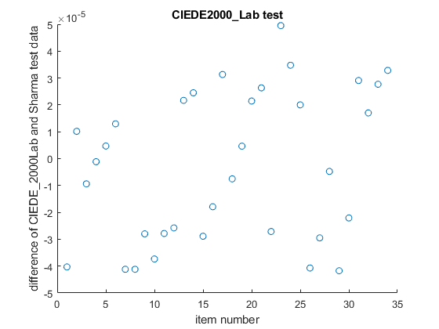

CIEDE2000_Lab
Navigate to: Home | Alphabetic list | Grouped list | Source code: CIEDE2000_Lab.m
Compute the CIEDE2000 color difference between two CIELAB L*, a*, b* stimuli.
Contents
Syntax
dE = CIEDE2000_Lab( Lab1, Lab2 )
Input Arguments
- Lab1: A struct with scalar real fields L, a and b
- Lab1: A struct with scalar real fields L, a and b
Output Arguments
- dE: scalar double. The color difference. dE == 1 is assumed to be just noticeable.
Algorithm
Computes the CIEDE 2000 color difference, following CIE 015:2018 (same as ISO/CIE 11664-6:2014. The computation is somewhat involved. In Sharma et al, “The CIEDE2000 Color-Difference Formula: Implementation Notes, Supplementary Test Data, and Mathematical Observations.” the authors give great guidance and many additional test Lab pairs. I followed their advice; for a test, see usage example below.
See also
Usage Example
function ExampleCIEDE2000_Lab() load('CIEDE2000TestData_Sharma.mat'); n = length(CIEDE2000TestData_Sharma); for i = 1:n s = CIEDE2000TestData_Sharma{i}; dE = CIEDE2000_Lab(s.Lab1,s.Lab2); diff(i) = dE - s.dE; end figure(); scatter(1:n,diff); xlabel('item number'); ylabel('difference of CIEDE\_2000Lab and Sharma test data'); title('CIEDE2000\_Lab test'); if max(diff) < 5e-5 % test data given with four digits after decimal point fprintf('CIEDE2000_Lab works well, max. diff = %g\n',max(diff)); else error('CIEDE2000_Lab failed test, max. diff = %g\n',max(diff)); end end
CIEDE2000_Lab works well, max. diff = 4.9499e-05